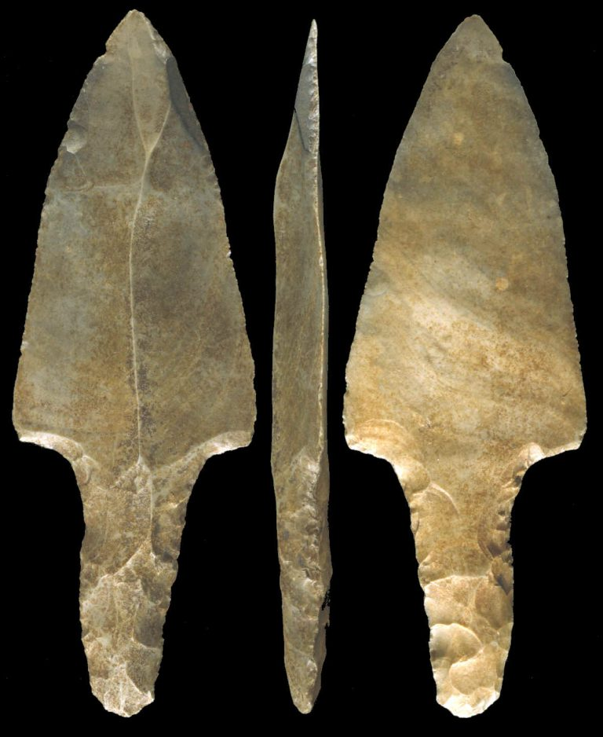
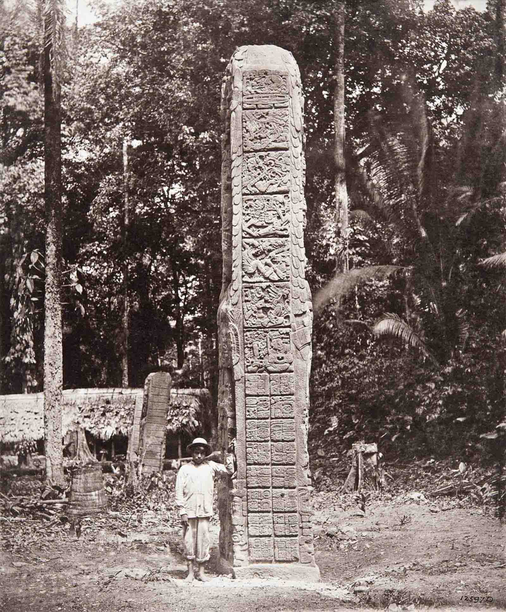
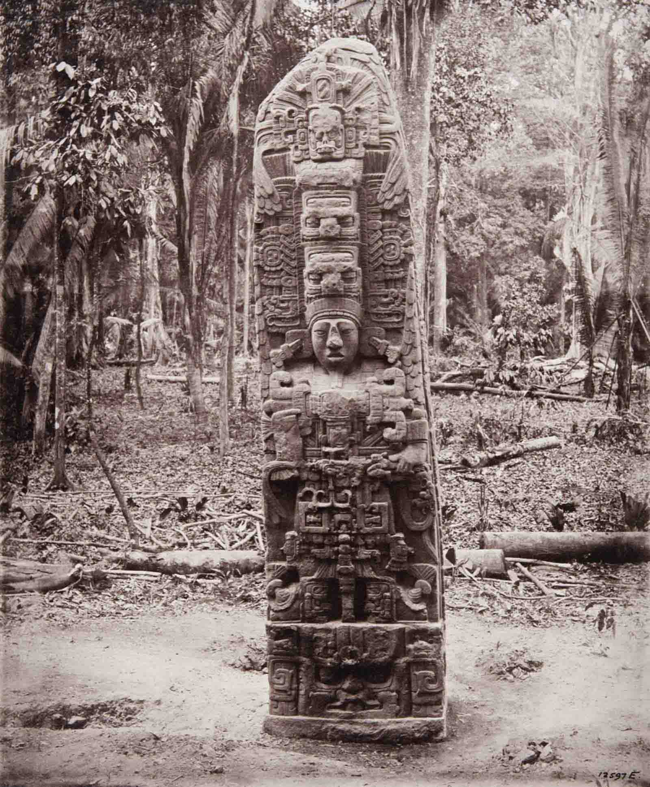
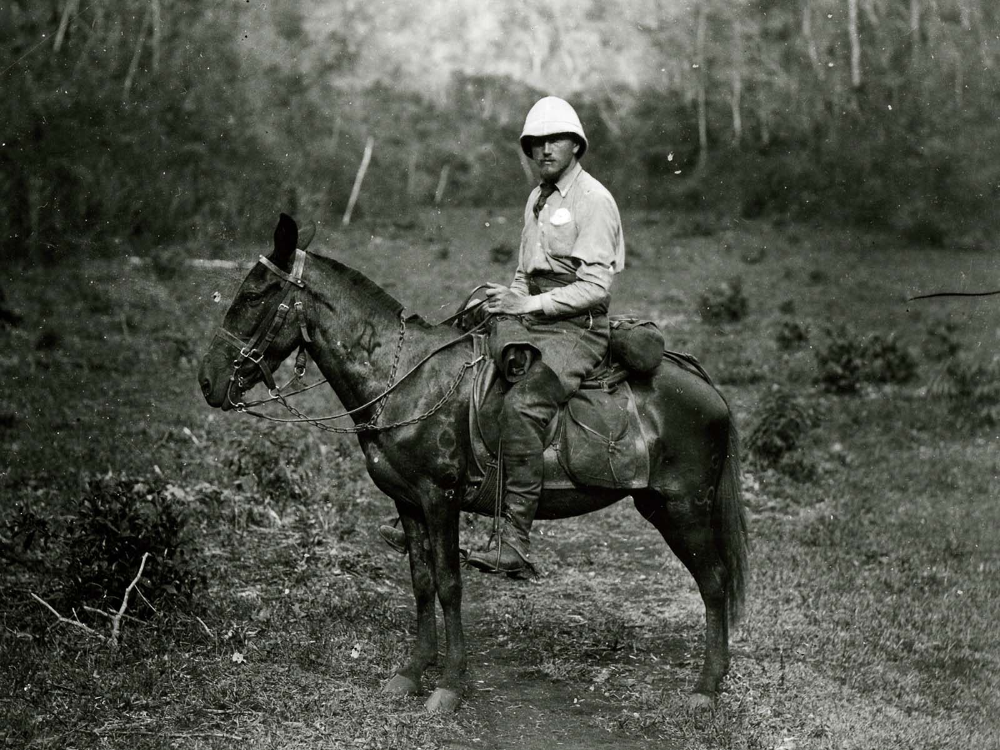
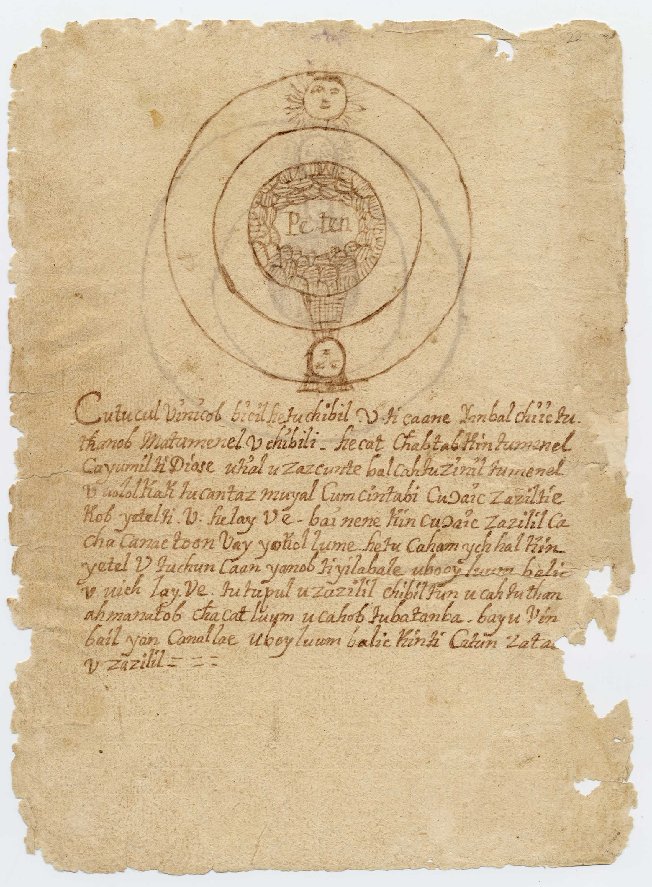
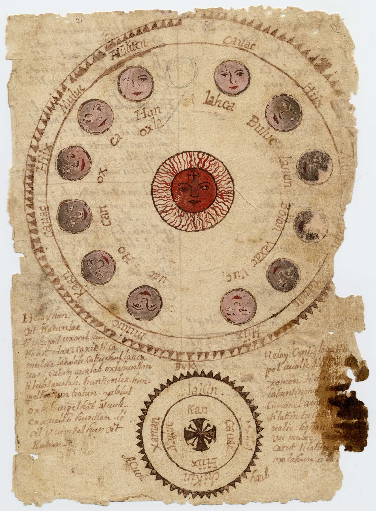
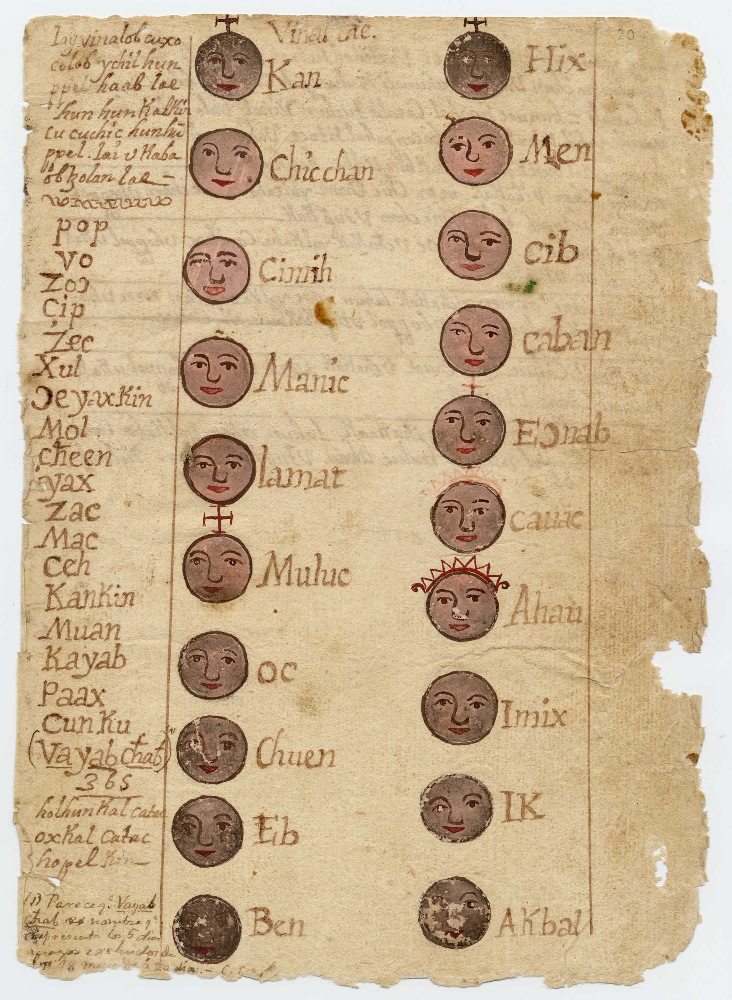

Primary Source 1
Clovis Point Weaponry

This is an image of a spearhead found in Colha in Orange Walk Town, Belize.
Based on the features of this spearhead, this is likely to be a clovis point spearhead. Clovis point
spears were used mainly for hunting as it uses it's sharp point to eradicate animals for food.
The Clovis Point spears are said to be used during prehistoric times. Gradually the clovis point evolved
to what is known as lowe points belonging to the Archaic Indians, successors to the Paleo-Indians.
This hunting tool along with a million other stone tools were discovered at Colha in the 1970s.
The Author or creator wasn't specified, but we do know that this discovery was made possible because of
The Colha Project in 1979, which deployed a team of archaeologists. The reason for this excavation
was research and the information would benefit the homeland as well as to have documentation of whatever
findings such as artifacts and tools to better understand the civilization residing there in the past.
This is a good source that convey this topic, because it shows the tools that were created by the Mayans
which helped them to strive for survival and eventually allowed them to grew as a civilization.
Primary Source 2
Monument 4: Stela D



This is an image of a monument erected by the Mayans. This photo was taken in the 1800s
but the monument itself is dated back the 766 AD. According to the Mayan dating system, it is
more accurately dated to 9.16.15.0.0 which in modern dates would translate to February 17, 766 AD.
The monument represent a powerful leader named Cauac Sky and he is wearing a emblem around his
chest called Chac which is the God of Rain and Thunder and in his left holding a sceptre which
represents K, the God of Wealth and Kingship.
The Monument along with others was discovered by Alfred Percival Maudslay who was a British Diplomat and
Archaeologist and was born in 1850 and died in 1931. His intentions were clear, he wanted to
excavated unexplored regions and even asked permission in advanced to do so. He also made preparations well
in advanced before conducting these explorations. This source adds more context to how advanced the Mayans were.
This is just a small monument compared to the temples made but yet it is well made, carefully designed,
influenced by their beliefs and has many small intricate details. It is a testament to the Mayan's ability
to build structures that are still here after hundreds of years.
Primary Source 3
Chilam Bilam



The following images are excerpts from a Mayan Codex called Chilam Bilam. The Codex is actually
written in the Yucatec Mayan language but using the Latin Alphabets, which is why you don't
Mayan symbols or hieroglyphs. It was written between the 17th and 18th centuries, and was called
Chilam Bilam because of a prophetic Priest named Chilam and Balam which meant Jaguar. The information
within the codex is of Mayan origins but it was written in Spanish because it is speculated that book
is also dated back to the Spanish Conquest of the Yucatec Kingdoms.
The codex contains a lot of information about History, Myths, Mysticism, Astronomy, Medicine, and so on.
In terms of planetary information, it provides a lot such weather forecasts, planting times and dates,
rising and setting of the sun, moon and so on, all based on observing the celestial bodies in the sky.
The codex is written by Chilam Bilam, and the purpose of the codex is for conservation of the information
. It was written for the people as it contained very helpful knowledge that can help in
agriculture and so on. It is a very good source as well because it shows that the Mayan
were very adept in their understanding of the planet and it's neighboring planets. They
were able to do this without a telescope, no fancy technology like we have now. So this
is truly a remarable accomplishment by the Mayans.